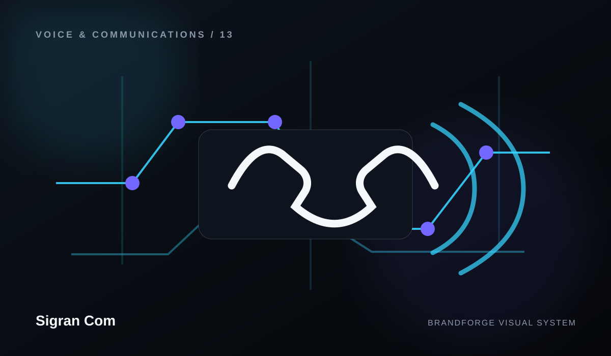

What happened?
Describe the issue, page, product, or workflow and what you expected instead.
Sigran Com
A dedicated support layer gives visitors clear contact routes, preparation guidance, help resources, and escalation paths without pretending unsupported service levels.

SUPPORT CHANNELS
9:13 PM 8/7/26
BEFORE YOU CONTACT US
Do not include passwords, private keys, payment-card data, or sensitive credentials in public messages.
Describe the issue, page, product, or workflow and what you expected instead.
Include recent changes, dates, browser or device context, and reproducible steps when relevant.
Explain whether the issue blocks work, affects one user, or affects a wider audience.
Use screenshots or logs only after removing secrets and personal or confidential information.
SUPPORT REQUEST
The website does not claim a ticketing backend that does not exist. This button opens the best verified channel available.
Find guidance, common paths, and troubleshooting preparation.
Open →02Understand the site, available services, and the best next step.
Open →03See the operational-status framework and where a real status feed can be connected.
Open →04Use the security route for sensitive vulnerability or incident information.
Open →